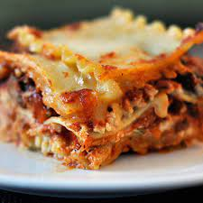

Lasagna

Description
Lasagna is the name of one of the oldest and best-known pasta shapes. It is usually rectangular or ribbon shaped, thicker than tagliatelle, made from a dough based on flour and eggs, with numerous local variants. After being boiled, the rectangular lasagna noodles are drained and placed in layers with a filling that varies based on different local traditions.
Ingredients
- Meat
- Onion and garlic
- Tomato products
- Sugar
- Spices and seasonings
- Lasagna noodles
- Cheese
- Egg
Steps
- Heat water to boil noodles in a large pot. Chop onions and mince garlic, set aside. In a large frying pan, cook ground beef and pork sausage together with chopped onions and minced garlic, at med-high heat, until fully cooked.
- Meanwhile, blend together ricotta cheese and egg in a small bowl. Drain excess grease from cooked ground beef and pork sausage mixture. Add spaghetti sauce to meat, stir to combine. Cook on low, covered, until hot. Turn off and set aside.
- Boil noodles according to instructions until just slightly al dente. Drain, and assemble quickly.
- To assemble lasagna: Top a small amount of the meat mixture into the bottom of the 9×13” pan. Top with 4 lasagna noodles laid horizontally along the length of the pan.
- Spread ricotta cheese along noodles this will be repeated so try to divide it between 5 or 6 layers. Spread meat mixture onto ricotta cheese (this will be repeated as well, so divide between 5 or 6 layers).
- Top with mozzarella cheese, approximately 1/3 cup. Repeat with a layer of lasagna noodles, ricotta cheese, meat mixture, mozzarella cheese until you get to the top layer.
- Top with parmesan cheese and parsley. Bake at 350° for 40 minutes.◦ Slice and serve.